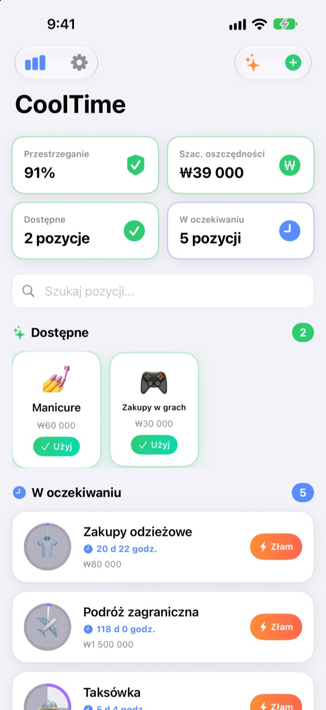
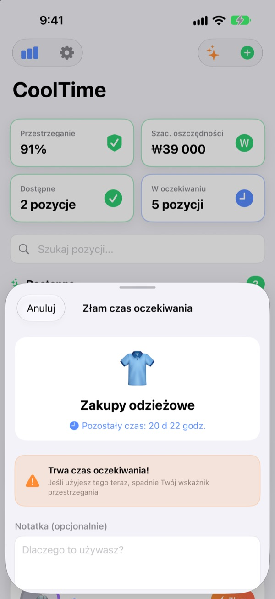
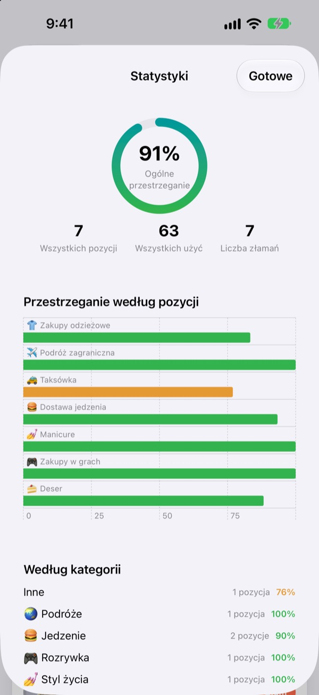
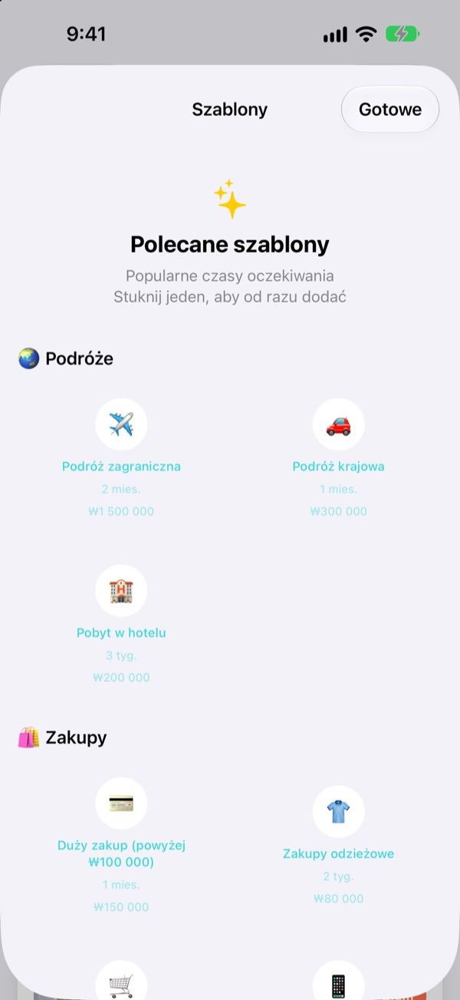

Kusi, żeby kupić?
Najpierw odczekaj.
Daj swoim wydatkom czas oczekiwania, jak umiejętności w grze. Po użyciu kółko się opróżnia i powoli napełnia, aż znów będzie wolno.
Wszystkie funkcje za darmo. Bez konta i bez reklam.

Wypróbuj tutaj
Wybierz pozycję, stuknij Użyj i przesuwaj czas o jeden dzień do przodu. Zobaczysz też, co się stanie, gdy użyjesz jej w czasie oczekiwania.
Czy „tylko ten jeden raz” zdarzył Ci się cztery razy w tygodniu?
Za każdym razem, gdy otwierasz aplikację z jedzeniem, masz wrażenie, że to pierwszy raz od dawna. Tylko kiedy właściwie był ten ostatni? CoolTime pokazuje, kiedy ostatnio czegoś użyłeś(-aś) i kiedy znów możesz. Dzięki temu decyduje zasada ustalona wcześniej, a nie chwilowy nastrój.
Jeszcze jedna pauza przed złamaniem
Gdy chcesz czegoś użyć w czasie oczekiwania, aplikacja pokaże, ile czasu zostało, i ostrzeże, że spadnie Twój wskaźnik przestrzegania.
Nadal potrzebujesz? Zapisz powód i rzeczywisty koszt. Złamanie zostaje w historii.

Samokontrola w liczbach
Wskaźnik przestrzegania, historia według pozycji i kategorii oraz liczba złamań, wszystko na jednym ekranie.
Gdy podasz szacowany koszt pozycji, aplikacja oszacuje też, ile zaoszczędziłeś(-aś) w tym miesiącu.

Popularne czasy oczekiwania jednym stuknięciem
Wybierz z polecanych szablonów: od podróży, zakupów i jedzenia po zdrowie i finanse.
Powiadomienie przyjdzie w połowie czasu oczekiwania i na jego koniec, a widżety na ekranie początkowym i ekranie blokady pokażą, ile zostało.

Zaczynasz w trzech krokach
- 1
Dodaj pozycję
Wybierz nazwę, emoji i czas oczekiwania w godzinach, dniach, tygodniach lub miesiącach. Albo sięgnij po szablon.
- 2
Stuknij Użyj, gdy z czegoś korzystasz
Czas oczekiwania rusza od razu, a kółko się opróżnia.
- 3
Przyszło powiadomienie? Możesz znowu
Dostaniesz powiadomienie, gdy czas oczekiwania minie. Wystarczy raz zezwolić na powiadomienia.
Czasy oczekiwania w polecanych szablonach
- 🌏 Podróże
- Podróż zagraniczna · Podróż krajowa · Pobyt w hotelu
- 🛍️ Zakupy
- Zakupy odzieżowe · Zakup impulsywny · Elektronika
- 🍔 Jedzenie
- Fast food · Dostawa jedzenia · Kawiarnia · Deser · Jedzenie na mieście · Nocna przekąska
- 🎮 Rozrywka
- Zakupy w grach · Kino · Maraton seriali · Koncert / występ
- 💅 Styl życia
- Alkohol · Taksówka · Manicure · Fryzjer · Masaż / spa
- 🏃 Zdrowie
- Dzień odpoczynku (bez treningu) · Cheat day
- 💰 Finanse
- Handel akcjami · Loteria
Każdy szablon ma rozsądny czas oczekiwania i szacowany koszt. Brakuje Twojego? Stwórz własny.
Pytania
Użyłem(-am) tego w czasie oczekiwania.
Nic się nie stało. Historia oznaczy to jako użycie w czasie oczekiwania, a czas oczekiwania zacznie się od tej chwili od nowa. Wliczy się to do wskaźnika przestrzegania i liczby złamań w Statystykach.
Jak liczone są oszczędności?
Jeśli podasz szacowany koszt pozycji, aplikacja oszacuje, ile razy w tym miesiącu czas oczekiwania Cię powstrzymał, i pokaże tę kwotę. To szacunek, a nie dokładna liczba, a pozycje bez szacowanego kosztu nie są liczone.
Nie dostaję powiadomień.
Na iPhonie sprawdź Ustawienia > Powiadomienia > CoolTime. Jeśli pierwszy ekran aplikacji informuje, że powiadomienia są wyłączone, przycisk Ustawienia przeniesie Cię tam od razu.
Jak dodać widżet?
Przytrzymaj palec na ekranie początkowym, stuknij + w lewym górnym rogu, znajdź CoolTime i dodaj widżet. Są też widżety na ekran blokady. Pokazują, czego możesz użyć teraz i ile czasu zostało.
Jak usunąć moje zapisy?
Usunięcie pozycji usuwa też jej zapisy. Usunięcie aplikacji usuwa wszystko. Zapisy są tylko na Twoim urządzeniu, więc po usunięciu nie da się ich odzyskać.
Czy dane synchronizują się z innymi urządzeniami?
Jeszcze nie. Twoje zapisy są tylko na tym jednym iPhonie. Synchronizacja między urządzeniami i kopie zapasowe są na liście w Ustawienia > Nadchodzące funkcje.
Czy to naprawdę za darmo?
Tak. Nic nie jest zablokowane za opłatą. Jeśli aplikacja Ci się podoba, możesz wesprzeć twórcę drobną kwotą w Ustawieniach, ale bez tego nic się nie zmienia.
Czy moje zapisy są gdzieś wysyłane?
Nie. Nie ma konta ani reklam, a Twoje czasy oczekiwania i historia są przechowywane tylko na iPhonie. Twórca dostaje wyłącznie anonimowe statystyki użycia, raporty błędów i opinie, które sam(a) wyślesz. Szczegóły znajdziesz poniżej w Polityce prywatności.
Znalazłem(-am) błąd albo brakuje mi funkcji.
Daj znać w aplikacji przez Ustawienia > Pomoc > Wyślij opinię, w wiadomości na Instagramie do @lee25_ios albo mailowo na adres poniżej. Jeśli jakiś ekran się zawiesił, napisz, co robiłeś(-aś), i podaj wersję iOS. Znajdziemy przyczynę znacznie szybciej.
Pytania albo uwagi? Napisz na leeo@kakao.com.